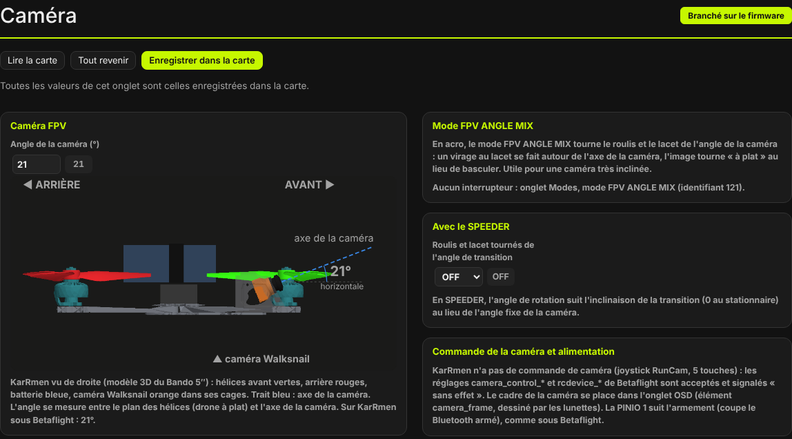
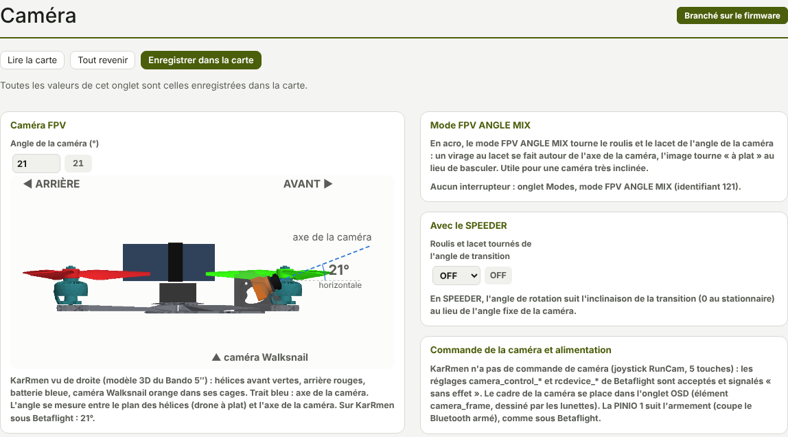

TRUEGLIDE
TRUEGLIDE Caméra
L'onglet Caméra (groupe Fonctions TrueGlide) règle l'angle de la caméra FPV et explique le mode FPV ANGLE MIX, qui tourne le roulis et le lacet de cet angle.


Angle de la caméra
Angle de la caméra (°) (fpv_mix_degrees) : de 0 à 90°, 0 par défaut. Il se mesure entre le
plan des hélices (drone à plat) et l'axe de la caméra. Sur KarRmen sous Betaflight : 21°. Le même réglage
est aussi dans l'onglet Configuration.
Le dessin montre KarRmen vu de droite, tiré du modèle 3D du Bando 5″ : hélices avant vertes, hélices arrière rouges, batterie bleue, caméra Walksnail orange dans ses cages. Le trait bleu est l'axe de la caméra ; la caméra tourne autour de ses vis quand on change l'angle. Les dessins faits depuis les modèles 3D ont été validés par Johann le 17/10/2026.
Mode FPV ANGLE MIX
En acro, le mode FPV ANGLE MIX tourne le roulis et le lacet de l'angle de la caméra : un virage au lacet se fait autour de l'axe de la caméra, et l'image tourne « à plat » au lieu de basculer. Utile pour une caméra très inclinée.
- Régler l'angle de la caméra.
- Onglet Modes : donner une plage d'interrupteur au mode FPV ANGLE MIX (identifiant 121).
- Enregistrer. L'onglet Caméra affiche alors la voie et la plage de l'interrupteur ; sans plage, il dit « Aucun interrupteur ».
Avec le SPEEDER
Roulis et lacet tournés de l'angle de transition (speeder_fpv_mix, OFF par défaut) : en
SPEEDER, l'angle de rotation suit l'inclinaison de la transition (0 au stationnaire)
au lieu de l'angle fixe de la caméra.
Commande et alimentation
- KarRmen n'a pas de commande de caméra (joystick RunCam, 5 touches) : les réglages
camera_control_*etrcdevice_*de Betaflight sont acceptés et signalés « sans effet ». - Le cadre de la caméra se place dans l'onglet OSD (élément
camera_frame, dessiné par les lunettes). - La PINIO 1 suit l'armement (elle coupe le Bluetooth drone armé), comme sous Betaflight.